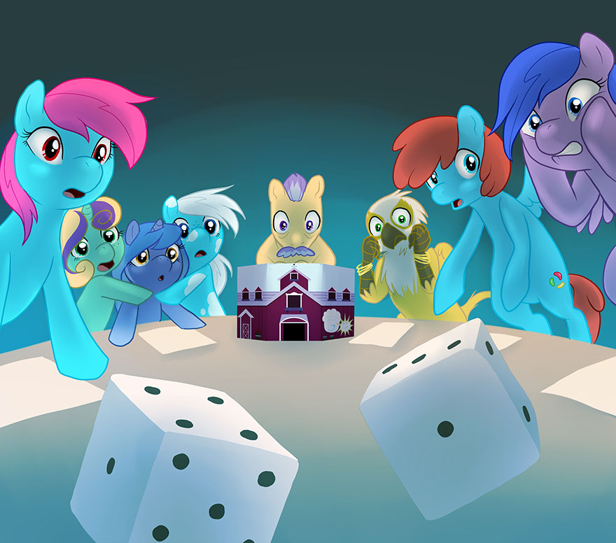

Running an Episode
Your Role as the Game Master (GM)
There’s one particular phrase which not many GMs hear nearly enough, whether because their players are too exhausted from playing a long game session, or are too preoccupied with what’s going on and what they think is going to happen next, to remember to say it.
That phrase is “Thank you.”
The GM easily has the most difficult job at the game table, from acting out all the non-player characters, to handling all the Skill Checks and damage for the player characters, to setting the scene and making things interesting and engaging, to establishing the story and helping to bring it to a satisfying conclusion; the GM has a dozen things to think about and consider from moment to moment during a game session (and often outside of one, too). This is true of any pen and paper tabletop roleplaying game, and the more complicated a particular game system is, the more difficult it is to GM. S3E is designed to be relatively simple in terms of its systems and mechanics, to allow a GM to focus on what we believe is the most important part of a GM’s job: working with the players to tell a fun, engaging, and meaningful story.
There is a long-standing debate among GMs as to what the role of a GM should be; whether a GM should be more ‘hands-off’ and reactive to what the players do (a more ‘sandbox’ approach) or more ‘hands-on’ and active in directing the players through the experience (a more ‘railroad’ approach). Most GMs find their own balance somewhere between those two ideals, and S3E is designed to work for either style and anywhere in-between. But there is a second debate which often arises in the middle of gameplay about whether the rules take precedence over the story, or the story takes precedence over the rules—and it is here that S3E takes a firm stance: the story takes precedence over the rules.
This all serves to sum up the GM’s role in S3E: The GM is somewhere between a director, a referee, and a supporting actor, guiding the players whenever necessary and letting them have the spotlight whenever possible. The GM’s most important concern is ensuring that the story is engaging, meaningful, and fun—and to that end they are fully empowered (and even expected) to bend or break the rules, if doing so helps to make the story better.
The most important part of playing S3E is to have fun; if your game group (yourself included) is having fun, then whatever you as the GM did to make that happen was the right thing to do. And if nopony else remembers to say it, allow us to say it on their behalf:
Thank you.
Getting Things Started
So, you’ve gotten a group of players together to play an Episode of S3E, you’ve helped guide them through character creation, and you’re prepared to GM the game. How do you get things off to a good and interesting start?
In television and film, there’s a common technique called a “cold open” which is used to great effect to involve the audience immediately and concisely set up the plot. Chances are good that you’ve seen this effect yourself as it’s used extensively in the original Friendship is Magic cartoon: the episode begins, some initial plot hook, punchline, or inciting incident gets your attention, and then the opening credits roll. In literary terms, this is sometimes called a “hook.” Whatever term is used, there’s a simple idea behind it—get the attention and interest of the audience and get them emotionally invested so they’ll stay with the show/film/book to its conclusion.
Ideally, the opening moments of your Episode should achieve a similar effect. Consider the type of Episode you’re running and try to construct an opening that establishes the style and atmosphere you want for the rest of the game. If your Episode is comedic, open with a funny situation and end your opening with a punchline or silly outcome. If your Episode is dramatic, mysterious, or scary, consider opening by setting up the mystery or ending the opening with a cliffhanger. There are many techniques for establishing an Episode, and every GM and group of players develops their own style, but for new GMs (or those who are new to MLP:RiM, at least), the original cartoon can serve as a helpful guide.
Once your opening is established, it’s a good idea to take a very short break—a minute or two, to let everyone at the table get something to drink, for example; this lets the style of the Episode sink in for your players, and lets everypony prepare for running the full Episode with a better understanding of their characters.
Aesthetics of Gameplay
Chances are good that if you’re GM’ing an Episode of S3E, you’ve GM’ed a pen and paper tabletop RPG before or at least have a strong interest in narrative gameplay and collaborative storytelling. In either case, it’s important for any GM to understand the intended gameplay aesthetics of S3E.
First, an explanation of what is meant by “gameplay aesthetics.” An aesthetic is a core principle of a designed experience (such as a game) and is thus something which it should reflect and explore when it is in action. Likewise, a gameplay aesthetic is an aesthetic which is intended to come through in a player’s experience with a given game. This section will list, explain, and explore four of S3E’s most important gameplay aesthetics; these are important to understand as the GM, as it is the GM’s job to help ensure that they are reflected in the players’ experience during an Episode. There are more aesthetics which are part of S3E’s design, but these are the most important four.
All for one, and one for all. In S3E, every character is unique; even those with similar mechanical advantages and capabilities are likely to have different motivations and goals. But this diversity is at its best when it is just one aspect of a unique and cooperative group. Players’ characters are referred to as “friends” for just this reason—it’s assumed that the characters of all the players around the table know each other and get along with each other (or at least that they will, soon after the Episode starts). Selfish and self-interested characters, who put themselves and their own interests before the well-being of their friends, are contrary to this aesthetic, and it’s generally going to be more fun for everyone if the players’ characters help each other and get along. Most of S3E’s design is intended to promote a group approach and teamwork.
For every problem, a solution. Everything is solvable, everything is fixable, and any challenge can be met—even if the solution is difficult or isn’t what you might expect it to be normally. This aesthetic manifests itself in many ways, but most notably in the lack of an organized combat system in S3E. Take the example of the dragon in the episode ‘Dragonshy.’ In dealing with the core challenge of the episode, the main characters tried several approaches, even including combat, and each was ineffective until they found what worked. The dragon wasn’t a pool of hit points and defense scores to be beaten, it was a puzzle to be solved—like every problem, there was a unique solution to be found (of course, this shouldn’t be taken too far as an example; sometimes, the solution to a problem is to stand up and fight). Try not to present your players with many insurmountable challenges (if any), and let them explore and experiment to find their own solutions.
What goes around, comes around. Heroes get rewarded, and villains get what’s coming to them; in S3E, it’s a core aesthetic that everypony eventually gets what they deserve. This is embodied mechanically in the Virtue system, but it can (and should) be handled narratively as well; characters who strive to be good and go out of their way to help others in need often find others coming to their aid when they need help. Similarly, characters who alienate and take advantage of others often find that nopony’s willing to help them when their self-destructive behavior puts them between the proverbial rock and a hard place. This is a classic aesthetic in many genres of fiction, and the collaborative storytelling of S3E is no exception.
Every journey is a personal journey. Journeys are important, and are almost always symbolic of a character’s personal, inner journey; this isn’t just true in fiction (where the concept of the hero’s journey is a classic part of many great works), but is also true in life. An experience is memorable because of its personal impact and the emotional attachment and investment someone feels for it. It’s not just what happens; it’s what we feel about what’s happening and how it influences us that are important. In S3E, this is mechanically reflected in that Lessons are how a group of characters earns Experience Points, but it’s also part of the GM’s job to reflect the importance of the story as it relates to the characters personally. This can be difficult to do, but opportunities usually end up presenting themselves to foster an emotional attachment between the players, characters, and the story itself; it’s important to understand that these opportunities are crucial to enjoyable gameplay, and to learn to recognize and capitalize on them when they arise.
Collaborative Storytelling
At the beginning of this book, as well as throughout its various sections, S3E has been referred to as a “pen and paper tabletop RPG.” This is true, but there’s also more to it from the perspective of the GM. It’s important for the GM to keep in mind that S3E is also a vehicle for collaborative storytelling and to understand what that means as it applies to the gameplay experience.
When players start to pull a story away from its originally-intended progression with unique ideas, it’s a natural tendency of many new (and sometimes experienced) GMs to take a firm stance with their players of “that’s not how it works in my world.” While this usually comes from a noble intention of preserving the integrity of the story, it’s important to also remember that the players are crafting the narrative along with the GM; it is the very nature of characters in a story to alter the direction of that story to make it personal to themselves—and S3E is certainly focused on the personal journey of the characters.
By the same token, as any veteran GM can attest, it’s entirely possible for things to get chaotic and out of hand—and it’s part of the GM’s job to keep a rein on things and prevent that kind of discord by guiding some of the players’ actions without overtly controlling them (and consequently removing the point of having players at all). One of the best ways to do this is to use players’ (and characters’) emotional attachment to parts of the story in order to appeal to them and guide them toward (or away from) a particular course of action. For example, the advice of a trusted non-player character can often turn a group of players toward a particular path or train of thought; likewise, if doing something would risk the well-being of a beloved place or character, players will often avoid it as an option.
The GM’s role should ideally shift fluidly between giving the players direction and focus and then letting them take the spotlight and lead themselves once they’ve gotten a handle on where they’re going in the story. Take cues from your players as their characters’ dynamics emerge; for example, if one character seems to be naturally taking on a leadership role, shift the interactions of the story to help reinforce that leadership role. Similarly, if two characters seem to be locking horns over different ways they think situations should be handled, adjust the choices the group comes across during the Episode so that it plays on that dynamic.
Good players will create their own fun and make the story personal, and it’s an important part of the GM’s job to help create opportunities for them to do so. While you may have conceived of the original premise and plot of the Episode, you’re the only one who knows how it was originally intended to be played; letting your players take the spotlight can help to make for an even better and more memorable story in the long run—a fun, meaningful, and rewarding experience which your players will credit you for providing when they reflect on it later. It’s an ideal, win-win scenario—and the greatest strength of truly collaborative storytelling.
Handling Skill Checks
As the Episode progresses, you will inevitably need to call for, and handle, Skill Checks. These are the backbone of S3E, and knowing how to handle Skill Checks effectively can be the difference between being a good GM and a great GM. This section will discuss some of the principles of Skill Checks in S3E, and give some insight into how to handle them effectively.
Essentially, there are two schools of thought when it comes to Skill Checks. The first is the ‘technical’ method, and the second is the ‘dramatic’ method. Either one is valid (though S3E was designed based on the ‘dramatic’ method), and both have their advantages and disadvantages; more often than not, GMs end up using a combination of the two.
The ‘technical’ method is based on context and technical detail; if building a barn is X difficulty, it should always be X difficulty, unless technical factors, which should modify the X difficulty by Y amount, come into play. This method is usually math-intensive and can break the immersion many roleplayers seek to preserve, but it is also consistent, which many players highly value because it gives them a firm understanding of their character’s capabilities in any given situation.
The ‘dramatic’ method is based on narrative impact and action significance; if it is very important that a character fly fast enough to escape a collapsing cave, the GM will make that task less difficult (or make the Skill Check itself an automatic success despite its actual result). This method requires implicit trust on the part of the players in the GM’s fairness (not to mention some bluffing on the part of the GM), but it also has the possibility to create a more dynamic story in the long run.
Most GMs use both methods in combination, but tend to lean more toward one or the other. Whichever method you favor, S3E can accommodate. When a character attempts a task which has enough narrative significance for you to call for a Skill Check, that Skill Check will be based on a difficulty target number. Players are not required to know the difficulty target; only the GM is required to know it so as to relate the success or failure of the attempted task (based on the Skill Check result as compared to the difficulty target).
This can allow for considerable ‘wiggle room’ at any time; if the story needs a Skill Check to succeed, you can use the Skill Check result as it would translate to a difficulty target to determine the degree of success. For example, if a character needs to escape a collapsing cave, you may determine that the Skill Check will succeed no matter what its result is. If its result is high, you might relate that the character escaped with time to spare; if the result is low, you might relate instead that they just barely made it out (and maybe only then due to a lucky break or after taking some minor damage). The player never needs to know (and shouldn’t be told!) that they couldn’t have failed the Skill Check in the first place.
What follows is the table of difficulty target numbers for Skill Checks, along with some example tasks for context.
Table 9.0: Difficulty Targets
Difficulty Target | Context | Examples |
Basic (10) | Cutie Mark Crusaders | Climbing onto a shelf, hiding in bushes at night |
Average (15) | Ponyville Citizen | Memorizing script lines, baking a tasty cake |
Challenging (20) | Small-Town Champion | Creating a small tornado, bucking an apple tree |
Advanced (25) | Best In The Big City | Setting a rodeo record, teleporting onto a roof |
Daunting (30) | Top Ten In Equestria | Flying fast enough to create a Sonic Rainboom |
Heroic (35) | A True Master | Summoning the legendary Fire Of Friendship |
Legendary (40) | Princesses / Discord | Banishing a powerful adversary to the moon |
Damage & Sidelining
Equestria can be a dangerous place, and eventually, characters will suffer harm. Whether this harm is physical or emotional in nature, it’s an important component of challenge which serves to make an Episode more meaningful—as long as it’s not excessive or unfair. Just as with Skill Checks, there is a ‘technical,’ consistent method and a ‘dramatic,’ contextual method of handling how much damage to deal to a character when the inevitable occurs. Just as with Skill Checks, both methods are viable and can be accommodated by S3E, though S3E was designed with the ‘dramatic’ method in mind.
Luckily, there’s an element of chance involved in dealing damage to a character, which keeps things unpredictable. Damage is dealt in a number of d6’s instead of as a set amount. This means that two of the same effects, set at the same number of damage d6’s, may not (and probably won’t) deal the same amount of damage to a character. Because of this, it frees you to set damage amounts without worrying about being unfair; as the saying goes, “let the dice fall as they may.”
When a character becomes Sidelined from damage—even when the entire group becomes Sidelined—it’s not necessarily the end of the game, and it can even be a way to reinforce a plot point. For example, say the characters tried to storm a dragon’s cave, and were Sidelined when facing the dragon itself. There’s no mechanically-enforced narrative consequences of being Sidelined, so you are free to say that the dragon merely kicked the group out of its cave and was content with leaving them alone after that. This not only means that the Episode can keep going, it also means that the players have the direct experience that they can’t take on the dragon face-to-face, and it may prompt them to look for another solution.
What follows is the table of damage d6 amounts for various levels of damage and examples of effects which might deal those levels of damage.
Table 9.1: Damage Levels
Damage Level | Fortitude Examples | Willpower Examples |
Light (1d6) | Tripping and landing face-first | Being called a blank flank |
Average (3d6) | Tumbling down a tall hill | Getting pranked or frightened |
Heavy (6d6) | Being stung by a swarm of bees | Facing a particularly scary monster |
Severe (10d6) | Getting hit by a dragon’s tail | Being shunned by your mentor |
Extreme (15d6) | Flower pot, anvil, wagon, piano | Banished and thrown in a dungeon |
Lessons & Experience
The basis for how a group of characters earns Experience Points is the identification of Lessons those characters learned, and listing these Lessons in the ‘Letter To The Princess’ phase at the end of an Episode. As the GM, ultimately the decision of whether or not to award XP for a given Lesson is up to you, so it’s important to have an understanding of how to fairly award XP for Lessons.
In essence, the GM should consider each Lesson in the light of the character’s actions during the Episode itself. Any Lesson which has a basis in the character’s actions has most likely had a meaningful impact on that character (and hopefully the player, too), and is a good candidate for awarding XP. There are two scenarios, however, which you should look out for during the Letter To The Princess.
Firstly, a group of characters who have very few Lessons at the end of the Episode; for example, a group of six with only one or two Lessons between them. This can be remedied by having a discussion with the players about the Episode, and bringing up Lessons which you may have seen reflected in their characters. There’s no reason you can’t help your players (after all, the GM isn’t the enemy), and not all players are good at (or comfortable with) discussing personal character growth.
Conversely, a group of characters who have a very large number of Lessons at the end of the Episode; for example, a group of three with six or seven Lessons between them. This is often a sign of overly-intricate analysis, and can be remedied by consolidating similar Lessons. Normally, a group of characters should have one or two Lessons per character; five Lessons is a significant increase, although the pace of character advancement is ultimately up to you as the GM.